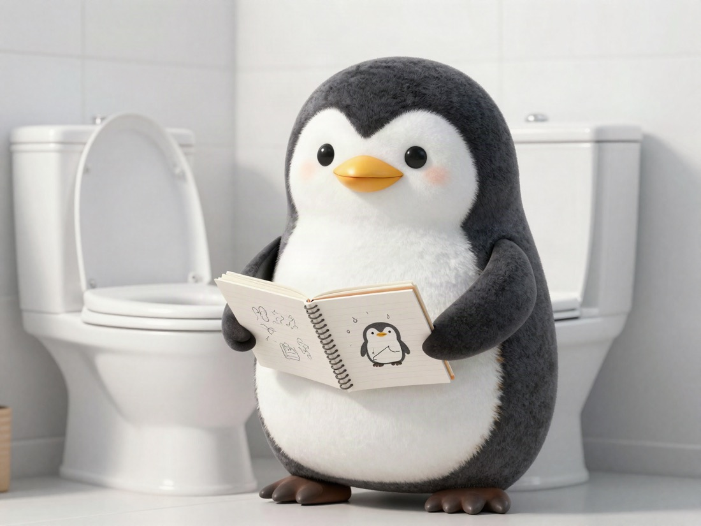

✍️ ABOUT THIS BLOG⚡ 6 SEC
My need to write things down works like a toilet 🚽
The Feeling
My need to output is like a toilet.

Why It Hurts
If an idea stays inside my head, it feels unpleasant.
🧠
PREVIOUS POST
I booked a plane ticket with my family name twice and paid 40,000 yen at the counter